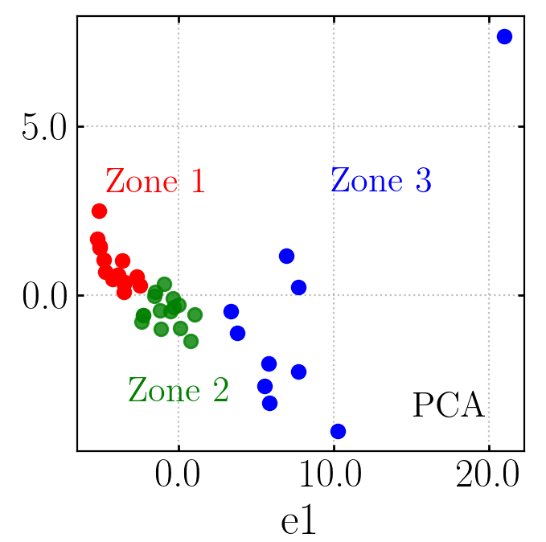
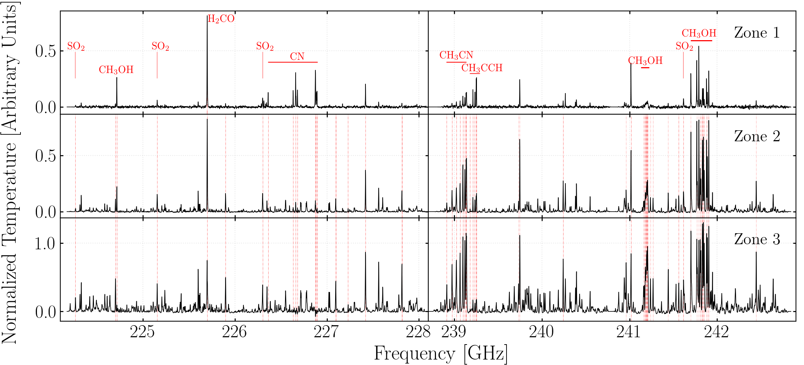

Massive stars (M★ > 8M⊙) play a fundamental role in the evolution of their host galaxy, as they can change the chemical composition and physical structure of their environment due to their high luminosity and strong ionizing radiation output. They are usually formed in clusters and high density regions, however, their formation process is not yet completely understood. Complex Organic Molecules (COMs) chemistry has been observed in different interstellar medium phases and it can be a powerful tool to study both low-mass and high-mass star formation. Therefore, this research is aimed at the search for patterns of chemical evolution in a large sample of Massive Young Stellar Objects (MYSOs) selected from different catalogues. To accomplish this goal, we analysed COMs chemistry in individual sources using mm-wave (1.1-1.4 mm) spectra from ALMA Band 6 observations. We applied dimensionality reduction techniques, such as Principal Component Analysis (left figure) and Hessian Locally Liner Embedding, to find patterns in large samples of spectral data. The analysis of the selected COMs (i.e. methanol, methyl acetylene and methyl cyanide) in the individual spectra demonstrated that the observed physical parameters, such as the excitation temperature and column density, are consistent with other observations despite considerable parameter estimation uncertainties and having non-detection of some COMs in all sources. The results from the spectral analysis in reduced dimensions shows that eigen-spectra can be tied to specific physical causes and related to MYSO parameters, which shows that this is not only an efficient method to simplify a many-variable problem, but also that physical conclusions can be retrieved from reduced-dimensionality MYSOs spectra.
